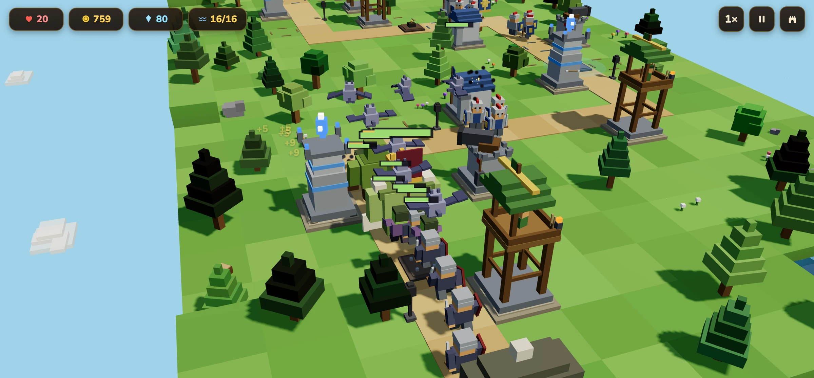
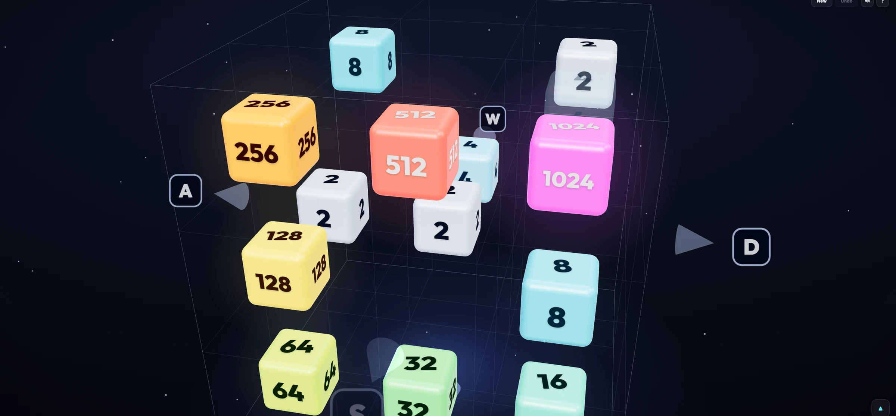

Software engineer / Bay Area, California
Serious systems.Curious mind.
I’m AJ. I build healthcare software at Notable Health and, off the clock, worlds that
run in a browser.
Currently at Notable Health ✳
I set technical direction for patient identity, routing, observability and
reliability.
~250k patient calls a month
The work behind the calls →
Selected work
Five projects / a few ways I think
01 / Simulation / multiplayer
An ocean with rules.
I built the sailing model, renderer, multiplayer and accounts. The part I care
about: the sea should be something you can learn to read.
A decision that matters
Thrust follows the point of sail. Wind, heel and velocity made good are visible in
the HUD, so the physics becomes a skill, not a hidden rule.
A shared sea for up to 20 players.
Dawn, from the helm of a running game.
02 / Voxel MMORPG
A world we can agree on.
I designed, built and deployed a voxel MMORPG: the browser client, the authoritative
realm service and the boundary between them.
A decision that matters
The server owns simulation. Colyseus rooms carry the same quests, loot and combat
state to every browser; the client draws the world.
Seven regions. Up to 64 players per realm.
Fallowmere at dusk. A place made from voxels.
murmuration 03
Listen, then render.
I built the audio analysis and WebGPU renderer. Chroma, transients and stereo
placement give a field of particles more to follow than volume.
620k particles · 8.07ms GPU time
Inside the build →

Blockhold 04
Build the rules first.
I made the modeler, simulation and campaign. Colored boxes become models; a fixed
60Hz loop keeps the battle independent of the frame rate.
10 maps · 249 waves · 154 tests
Inside the build →

Cubit 05
Make depth feel obvious.
I built the whole single-file game. Swipes follow the projected cube axes, and
translucent tiles let you read what is happening inside.
One 553 KB file · 62 tests
Inside the build →
Still on the desk
Pre-lit forests and deterministic worlds.
A little context
Two degrees.
I studied computer science and astrophysics at UMass Amherst. Algorithms and General
Relativity landed in the same problem-set pile.
In college, I simulated CO₂ cooling for particle detectors. Now I simulate an ocean. I
learn things by building them.
Away from the keyboard: heirloom tomatoes, bikes and Pink Floyd, roughly in that
order.
The professional thread
Notable Health Software Engineer Aug 2022 - Present+
My team owns the voice and conversations platform. I lead technical direction,
mentor engineers and turn incidents into platform fixes.
Read the professional case →
Harvest Fintech, Inc. Software Architect and Engineer Jul 2021 - Jan 2022+
First significant engineer on the product. Built the backend and database
engineering for a mobile application and architected its microservices.
UMass Amherst, Physics Department Student Software Developer Jan 2021 - May 2022+
Built and maintained the software professors used to acquire and share
demonstrations across 20+ courses and 1000+ students. Ported a legacy WordPress
site with a JSON backend to an Express, React and PostgreSQL application deployed
on site.
Full résumé ↗